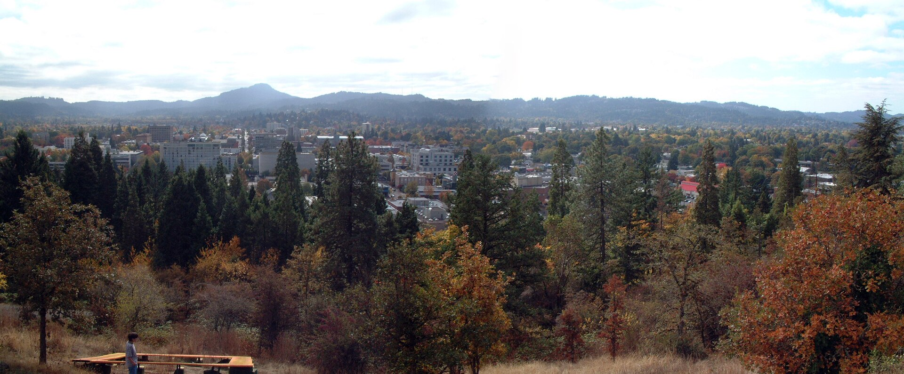

Here is what matters locally. Acreage, farms, timber, and vineyard ground. Well and septic throughout. Farm and forest zoning, with deferral questions on many parcels. Roads and access are worth verifying in winter conditions, not just on a sunny day.
Then there is the relocation side of it. I have been the person on the other end of that phone call, trying to figure out an unfamiliar map from a thousand miles away. Which areas are actually quiet. What the commute really looks like. Whether the rain is as bad as everyone says. I will give you the honest version, including the parts that are not in the brochure.
Lorane sits in the hills southwest of Eugene, reached by winding roads through farm and timber country. It is wine country in parts, homestead country in others, and thoroughly rural throughout. People who live here chose the drive on purpose.
| ZIP codes | 97451 |
| Known for | Territorial Highway · Local vineyards · Siuslaw River headwaters · Surrounding timberland |
| Schools | Crow-Applegate-Lorane School District serves the area. |
| Living here | Wine country back roads, deep quiet, and a genuine sense of distance from the city despite being a reasonable drive from Eugene. |
You want someone who combines real relocation experience with parcel-level knowledge of Lorane. Brett Herring works Lorane as part of his core Lane County territory with The Operative Group at Real Broker, LLC, and lives in Springfield. Call or text 541-968-9422 for a straight local conversation with no pressure attached.
Acreage, farms, timber, and vineyard ground. Well and septic throughout. Farm and forest zoning, with deferral questions on many parcels. Roads and access are worth verifying in winter conditions, not just on a sunny day.
It is more gray than downpour. Long stretches of drizzle rather than dramatic storms, mostly November through March. Summers are dry, warm, and beautiful. Most transplants adjust in one full cycle and then defend the place to everyone back home.
Yes, and I do it regularly. Video walkthroughs where I show you the things photos hide, honest opinions on areas before you spend money flying out, and a tightly planned tour day when you do come.
The east side of the county toward Pleasant Hill, Jasper, and Dexter puts real acreage within a short drive of Springfield services. That balance is exactly why those areas hold their appeal.
Buying your first place, selling acreage out east, or landing here from out of state — start with a conversation. No pressure, no script, no disappearing act.
541-968-9422